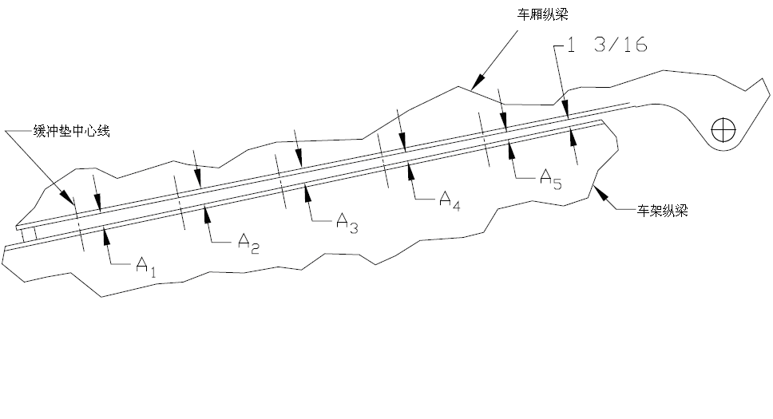
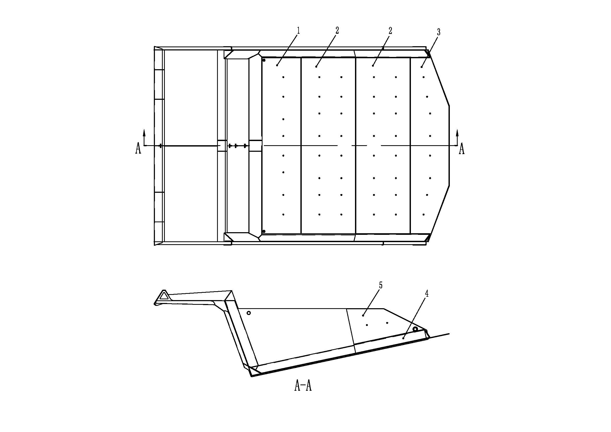
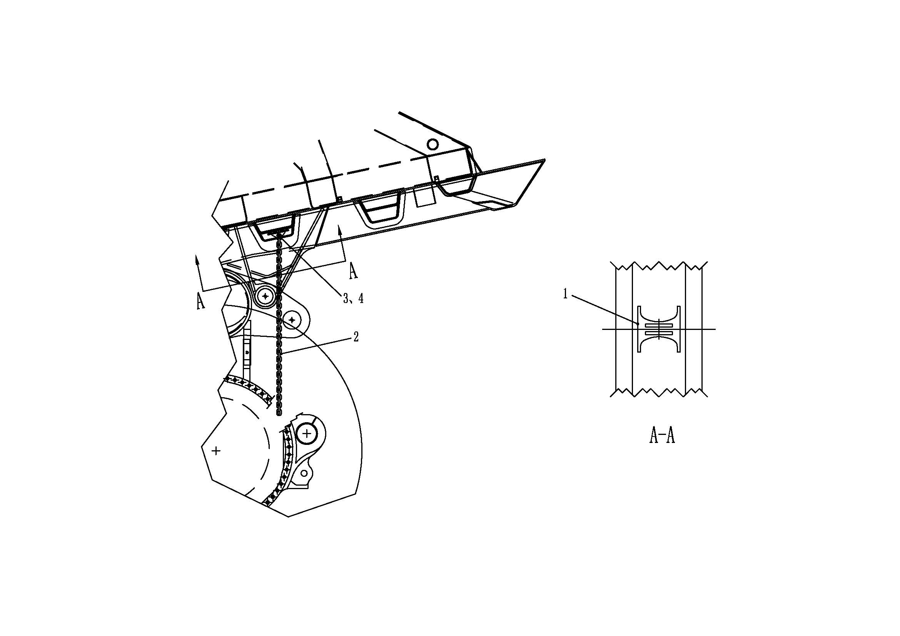
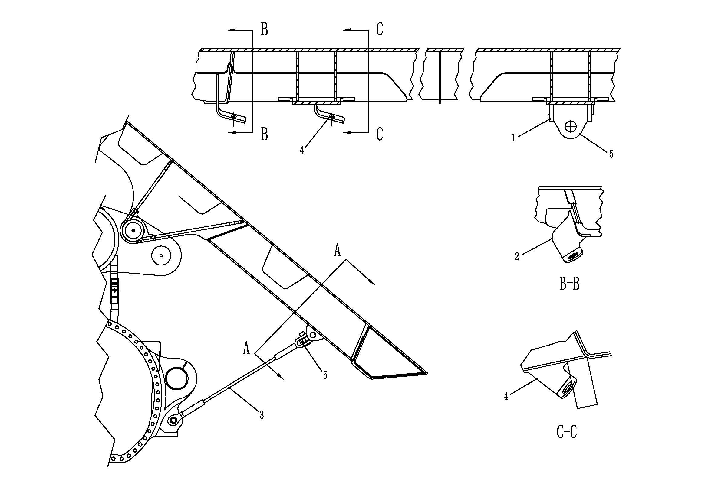

车厢及安装 · BODY MOUNTING ASSEMBLY
Спецификация
1.
Узел кузова
8.
Болт
15
Болт
2.
Ограждение кабины
9.
Пластина для регулировки зазора подушки
16.
Левый направляющий кронштейн
3.
Арка над левой шиной
10.
Пластина для регулировки зазора подушки
17.
Направляющий блок
4.
Крепежная планка пальца
11:
Пластина для регулировки зазора подушки
18.
Правый направляющий кронштейн
5.
Шарнирный палец
12.
Буферная подушка
19.
Блок для регулировки зазора
6.
Шарнирная втулка
13
Самоконтрящаяся гайка
20
Арка над правой шиной
7
Упор пальца
14
Плоская шайба
Рисунок 1. Кузов и установка
Рис. 2. Установка амортизационной подушки
Спецификация
1.
Износостойкая пластина
2
Износостойкая пластина
3
Износостойкая пластина
4.
Износостойкая пластина
5
Износостойкая пластина
Рис. 3. Установка износостойкойпластины
Спецификация
1.
Кронштейн в сборе
2
Цепь для выгрузки камней
3
Болт
4.
Гайка
Рис. 4. Установка цепи для выгрузки камней
Спецификация
1.
Подвесная пластина
2
Кронштейн
3
Страховочный трос
4.
Кронштейн
5
Кронштейн
Рис. 5. Установка предохранительного троса кузова
Общие сведения
Кузов (см. рис. 1) соединяется с основанием хвостовой части рамы через шарнирный палец, и соприкасается с продольной балкой рамы через подушку кузова, расположенную под продольной балкой. Для того, чтобы удовлетворить требования к перевозка материалов, имеющие самые различные плотности, возможно проектирование кузова других типов и размеров, чтобы иметь разные объемы кузова.
Управление
Кузов (см. рис. 1) - часть ТС, предназначенная для размещения материалов, непосредственно воспринимает удары и воздействие износа от материалов. Настильный широкий пол кузова и относительно небольшая погрузочная высота позволяют не только уменьшить высоту центра тяжести ТС, но и увеличить эффективность погрузки. Гладкие борта и пол позволяют облегчать разгрузку и обеспечить высокую эффективность.
Высокопрочная износостойкая накладка (см. рис. 3) приварена в качестве дополнительного элемента. Износостойкая накладка позволяет в определенной степени уменьшить степень износа, вызванного материалами при погрузке и разгрузке, продлить срок службы кузова.
Узел кузова имеет четыре основных опорных компонента:
1. Резиновый буфер (рис. 1, поз. 12), расположенный под продольной балкой кузова, дает возможность кузову опираться на раму. Эти резиновые буферы служат для восприятия и распределения веса груза в кузове, также обеспечивают свободу вращения шарнирно-сочлененного соединения кузова.
2. Механизмы направляющего блока (рис. 1, поз. 16, 17, 18) служат для ограничения поперечного перемещения при опускании кузова и нахождении кузова на раме.
3. Гидроцилиндр подъема соединен с кронштейном механизма подъема, расположенным на кузове. Гидроцилиндр подъема воспринимает вес кузова только при выполнении разгрузочных работ, не используется для восприятия никаких внешних сил в других условиях работы, это очень важно. Подробнее описание гидроцилиндра подъема приведена см. в главе 050 «Гидравлическая система».
4. . Шарнирно-сочлененное соединение (рис. 1, поз. 4, 5, 6, 7, 8) кузова используется в качестве центральной оси вращения кузова, позволяет кузову вращаться вокруг оси шарнирно-сочлененного соединения в процессе подъема и опускания. Управление усилием на продольную балку кузова может осуществляться путем регулировки зазора между подушками кузова.
Выхлопные газы двигателя карьерного самосвала выпускают в атмосферу через провод снаружи кузова, кузов подогревается выхлопными газами (опция), это позволяет предотвратить прилипание или примерзание материалов к кузову. Подробное описание системы подогрева кузова выхлопными газами приведено в соответствующих разделах.
Устройство для удаления камней(см. рис. 4) служит для удаления камней и других материалов, застрявших между задними двускатными колесами. Устройство для удаления камней висит на днище кузова, может свободно вращаться вокруг шарнирного пальца.
Если существует необходимость подъема кузова при проведении осмотра и ремонта, необходимо принять меры по фиксации кузова. Зацепите предохранительный трос (см. рис. 5), закрепленный к кузову, за крепежное отверстие в задней части картера моста. Можно присоединить предохранительный трос только после подъема кузова до требуемого положения. При нормальной работе предохранительный трос висит под кузов, оба конца соединяются с кронштейном кузова.
ПРЕДУПРЕЖДЕНИЕ
Если кузов не опущен на раму или не закреплен предохранительным тросом, не допускайте работы на карьерном самосвале; наоборот, также не допускайте опускания кузова с помощью рычага управления подъемом после фиксации кузова тросом.Ремонт и настройка (рис. 1, 2, 3, 4 и 5)
Регулярное техническое обслуживание должно включать следующие шаги:
1. Проверить кузов на наличие износа и повреждений. См. главу 200 настоящего руководства - Другие содержания инструкции по сварке на рабочем месте, отремонтировать по мере необходимости.
2. Проверить износостойкий вкладыш (в случае дополнительного оборудования) на наличие износа и повреждений. По мере необходимости отремонтировать или замените.
3. Проверьте степень износа устройства для удаления камней, отремонтируйте или замените по мере надобности.
4. Проверить защитные канаты кузова, кронштейны и другие компоненты на наличие износа или повреждения.
Примечание: как показано на рисунке 5, кузов фиксируется в положении подъема. Закрепить его на кронштейне коробки заднего моста с помощью собственного штыря на защитном канате.
5. Проверить узел шарнирного пальца на наличие износа или повреждения. Также убедиться, что штифт закреплен, как показано на рисунке 1, оно вращается только с кузовом. По мере необходимости отремонтировать или замените.
6. Если карьерный самосвал оснащен дополнительной системой подогрева кузова:
a. Проверьте выхлопную трубу и соединение кузова на наличие признаков утечек выхлопных газов или засорения. Отремонтируйте по мере надобности.
b. Проверьте проход устройства подогрева кузова выхлопными газами на наличие отложений нагара. Нагар и отложения могут вызвать засорение прохода, препятствие движению выхлопных газов, это может стать причиной снижения мощности двигатель и эффективности подогрева кузова. При проведении очистки поднимите кузова, промойте водой. Может быть, существует необходимость очистить стержнем или подобным способом. Не допускайте очистки прохода огнем или аналогичным способом.
ПРЕДУПРЕЖДЕНИЕ
Не вдыхайте кислород и масло в каналы, пытаясь сжечь отложения, так как они могут образовать взрывоопасную смесь.7. Проверить подушку кузова на наличие старения резины, поломки монтажного уха или другого износа или повреждения в течение каждого периода обслуживания (около 150-250 часов). По мере необходимости отремонтировать или замените. Для правильной установки и определения размеров выполните следующие действия.
8. Проверить направляющий блок кузова через каждые 500 часов (см. 17 на рисунке 1):
a. Когда кузов опускается и располагается на продольной балке рамы, измеряется расстояние между направляющими пластинами с обеих сторон карьерного самосвала (№ 17) и износостойкими пластинами (сваренными снаружи продольной балке рамы).
b． Если зазор между двумя элементами составляет менее 1/2 дюйма (13 мм), то это свидетельствует о том, что не требуется регулировка направляющего блока.
с. Если зазор между ними превышает 1/2 дюйма (13mm), отрегулировать зазор направляющую пластину, как описано далее в этой главе
ПРИМЕЧАНИЕ: Если появляется заметный износ на одной стороне или на обеих сторонах направляющего блока в сборе кузова, то это свидетельствует о том, что также появляется износ или ненадлежащая регулировка других компонентов (например, шарнирный палец и/или шарнирная втулка). Следует своевременно отрегулировать, чтобы свести к минимуму износ направляющего блока кузова.
Пластина для регулировки зазора подушки
Амортизационную подушку кузова можно отрегулировать следующим образом:
1. Остановить транспортное средство в безопасном месте. Транспортное средство должно быть закреплено с использованием других методов, кроме тормозной системы трения на карьерном самосвале.
2. Поднять кузов и закрепить кузов, чтобы кузов не упал.
ПРЕДУПРЕЖДЕНИЕ
Когда кузов не находится на раме, не работайте под работой карьерного самосвала или вокруг него, если кузов не находится на месте. 3. Проверить подушку и фиксировать ее. Заменить его, если он окажется поврежденным или изношенным.
4. Установите регулировочные прокладки (рис. 1, поз. 9, 10, 11) подушки на место, где верхняя фланцевая пластина продольной балки кузова перпендикулярна продольной балке рамы. Проводите дополнительную регулировку зазора с использованием блока регулировки зазора (рис. 1, поз. 19), блок регулировки зазора должен располагаться на расстоянии примерно 3 дюйма (76 мм) до первой канавки под прокладку.
5. Снять приспособление и полностью опустите его на кузов, пока продольная балка рамы не давила прокладку для регулирования зазора.
Примечание: если подушка касается поверхности фланца на продольной балки рамы до этого, снимите подушку и отметить ее для последующей переустановки.
6. Измерить расстояние между фланцем рельса рамы и фланцем рельса рамы примерно на 3 дюйма (76mm) за последним набором подушек для установки подушек. Если это расстояние составляет менее 1-3 / 16 дюймов (30mm), поднять кузов и залейте его подходящим количеством прокладок для достижения наименьшего размера.
7. Измерьте расстояние между кузовом и фланцем рамы у продолговатого отверстия под регулировочную прокладку в середине каждой подушки на внутренней и внешней сторонах продольной балки, т. е. расстояние между A1 и A5, показанное на рис. 3.
Примечание: если размеры внутренней и внешней сторон окажутся несовместимыми, этот размер должен принимать среднее значение из двух шагов измерения.
8. Измерить толщину каждой подушки.
9. Вычитать толщину прокладки из соответствующего промежутка между зазорами и запишите толщину требуемых прокладок.
10. Подготовить некоторые прокладки необходимой толщины. Поднять и Закрепить кузов и установите прокладки в правильном количестве прокладок.
Примечание: если карьерный самосвал оснащен прокладками различной толщины, более толстые прокладки будут наносить ущерб раме.
11. Снять прокладки. Для правильного регулирования зазора расстояние между подушкой и рамой должно быть в пределах ±1/32 дюйма (0,030mm) в каждом положении подушки.
12. Поместить автомобиль в зону обслуживания для обслуживания после 6-8 циклов нагрузки.
13. Следовать предыдущим шагам, чтобы повторно обнаружить и повторно отрегулировать зазор.
Примечание: во время следующего цикла обслуживания карьерного самосвала поднять кузов и убедиться, что контактные поверхности продольных балок кузова равномерно не изношены. Перед работой на карьерном самосвале убедиться, что кузов надежно закреплен.
Зазор направляющего устройства кузова должен быть отрегулирован следующим образом:
1. Убедиться, что карьерный самосвал припаркован в безопасном месте на ровной поверхности.
2. Убедиться:
a. Проверьте степень износа и правильность установки шарнирного пальца и шарнирной втулки.
b. Проверьте состояние поверхностей направляющего блока и направляющей пластины.
c. Опустите кузов на продольную балку рамы в вертикальном положении, проверьте правильность зазора между подушками кузова.
3. Дать кузову полностью подняться и спускать не менее 3 раз.
4. Опустите кузов на раму вблизи центра, измерьте расстояние между износостойкой накладкой (на продольной балке рамы) и внутренней поверхностью направляющего блока кузова.
a. Если расстояние между ними составляет менее 1/2 дюйма (13mm), зазор направляющей пластины подходит и не требует регулировки.
b. Если общий зазор между ними превышает 1/2 дюйма (13mm), отрегулировать зазор направляющего блока, как описано в этой главе.
5. Проверить толщину направляющих пластин двух направляющих блоков. Если он поврежден или изношен, замените соответствующие детали вовремя.
ПРИМЕЧАНИЕ: Если появляется чрезмерный износ на одной стороне или на обеих сторонах направляющего блока в сборе кузова, то это свидетельствует о наличии износа или ненадлежащей регулировки других компонентов (например, шарнирный палец и/или шарнирная втулка). Следует своевременно отрегулировать, чтобы свести к минимуму износ направляющей платины кузова.
6. Снять сварной шов от неподвижного направляющего блока кузова до узла направляющего кронштейна. Полировать сварные швы на обеих сторонах кронштейна и на направляющем узле.
7. Установить два направляющих блока, которые находятся на расстоянии 1/8 дюйма (3 mm) от каждой направляющей пластины и надежно свариваются на месте.
8. Поднять и опустите кузов как минимум 3 раза и перепроверить расстояние направляющей. По мере необходимости отрегулировать.
Снятие
Кузов можно снять с карьерного самосвала следующим образом:
1. Остановить транспортное средство в безопасном месте. Транспортное средство должно быть закреплено с использованием других методов, кроме тормозной системы трения.
2. Убедитесь в полном опускании кузов на раму. Нажмите на кнопку на конце рычага управления подъемом, чтобы система находилась в плавающем положении.
3. Снимите цепь устройства для удаления камней с каждой стороны согласно нижеследующему порядку:
a. Поднимите и держите его в поднятом состоянии с помощью подходящего подъемного приспособления.
b. Снимите крепежные болты и гайки.
c Опустите его на землю.
4. Убедитесь в полном опускании кузова на продольную балку рамы. Переместите рычаг управления подъемом в плавающее положение, чтобы убедиться, что в каждом гидроцилиндре не осталось давления.
5. Надежно зафиксируйте гидроцилиндр подъема подходящим методом, чтобы предотвратить случайное перемещение гидроцилиндра подъема при подъеме кузова.
6. Снимите крепежные болты, закрепите гидроцилиндр подъема к пальцу кузова.
7. Зацепите подъемное приспособление за подъемное ушко кузова, приготовьтесь к подъему. Точки подъема находятся в верхней части бортов кузова, по две штуки с каждой стороны. Если это используется в качестве точек подъема, то передняя часть кузова должна быть немного выше задней.
ВАЖНОЕ ПРИМЕЧАНИЕ: для подъема кузова можно использовать специальный U-образный рым-болт. Следует соблюдать осторожность, если цепь используется, поскольку относительно плоская цепь увеличивает коэффициент нагрузки и снижает полезную нагрузку. Также рекомендуется использовать распорки между верхними ребрами и ножками для крепления, чтобы уменьшить вероятность повреждения боковых пластик.
8. Снять перегородку шарнирного штифта(№ 7 на рисунке 1), болты (№ 8 на рисунке 1) и другие приспособления.
9. Снять шарнирный штифт.
10. Слегка поднимите кузов, снимите нагрузку с заднего шарнирного пальца, будьте осторожны, полностью отсоедините гидроцилиндр подъема от кузова, и избегайте перемещения гидроцилиндра подъема.
ВАЖНОЕ ПРИМЕЧАНИЕ: не допускайте поворота подъемного цилиндра в любом направлении, так как это приведет к чрезмерному скручиванию шланга.
11. Поднять кузов с карьерного самосвала и поместить его на землю, как требуется. Рекомендуется использовать ярлыки или знаки для инструкции сборки.
Ремонт
Для замены вкладыша и ремонта повреждения см. подробные инструкции для этих устройств, представленные персоналом карьерного самосвала или представителем NHL.
Шарнирная втулка может быть установлена следующим образом:
1. Снимите втулку методом выдавливания или резки.
2. Удалите все заусенцы и царапины с внутренней и внешней поверхностей отверстия шарнирно-сочлененного соединения.
3. Убедитесь в отсутствии дефектов внутренней и внешней поверхностей новой втулки.
4. Измерьте внутренний диаметр отверстия шарнирно-сочлененного соединения и наружный диаметр втулки. Обеспечите надлежащую посадку их с натягом. Перед установкой необходимо охладить втулку (обычно жидким азотом) и нагреть отверстие шарнирно-сочлененного соединения, чтобы завершить сборку.
5. Установите новую втулку под подходящим давлением, убедитесь в правильной посадке.
Установка
Кузов можно установить следующим образом:
1. Убедиться:
a. Шток гидроцилиндра подъема должен полностью втянуться и зафиксироваться вблизи указанного места установки.
b. Размер и структура кузова подходит для карьерного самосвала, и все ремонтные работы завершены.
2. Зацепите подходящее подъемное приспособление за подъемное ушко кузова. Подробнее см.Рекомендации по снятию.
3. Медленно поднимайте кузов с земли. Обычно передняя часть кузова немного выше задней. Это положение является лучшим местом для установки кузова.
4. Разместите кузов на раме с помощью крана и грузового каната, и совместите отверстие шарнирно-сочлененного соединения кузова с шарнирной втулкой рамы.
Примечание: при посадке кузова убедиться, что верхняя защитная пластика кузова не соприкасается с монтажными компонентами кабины или другой платформы.
5. Вставьте шарнирный палец в указанном направлении. Обеспечите правильную посадку пальца, пусть выступающий конец пальца располагается под крепежной планкой пальца (рис. 1, поз. 4), чтобы шарнирный палец только вращался вслед за вращением кузова.
6. Отрегулируйте высоту кузова или дальность выдвижения штока гидроцилиндра подъема, совместите отверстия в кузове и отверстиями в гидроцилиндре подъема.
7. Посадить кузов и установить верхний фиксирующий штифт подъемного цилиндра.
ПРИМЕЧАНИЕ: Переместите рычаг управления подъемом в плавающее положение, это облегчает выдвижение и втягивание штока гидроцилиндра подъема, чтобы совместить с отверстиями.
8. Установить перегородку и монтажный болт на четырех штырьках.
a. Если болт используется в качестве «щитка» и фиксируется гайкой, то используемая гайка должна быть самоконтрящейся, если отсутствует самоконтрящаяся гайка, то можно зафиксировать гайку следующим способом:
(1) Блокировать дополнительной гайкой - двойной гайкой или
(2) Сварить гайку внакрой на болте, или
(3) Закрепить шплинтом.
b. Если болты используется непосредственно для крепления прижимной пластины, то болты должны комплектоваться стопорными монтажными шайбами.
9. Отрегулируйте зазор между подушкой кузова и направляющим блоком согласно конкретному порядку, указанному в разд. «Ремонт и регулировка».
10. Несколько раз повторяйте процедуру подъема и опускания кузова, чтобы обеспечить его нормальное рабочее состояние.
11. Переустановить брызговики или другие ранее удаленные части.
12. Проверить рабочее состояние подъемного кузова и при необходимости отрегулировать его для достижения желаемой работы.
Конструктивные детали - установка автомобилей и аксессуаров
020-0050
Конструктивные детали - установка автомобилей и аксессуаров
020-0050
8
7
Конструктивные детали - установка автомобилей и аксессуаров
020-0050
1
Продольная балка рамки
Центральная линия подушки
Продольная балка кузова
Иллюстрации



